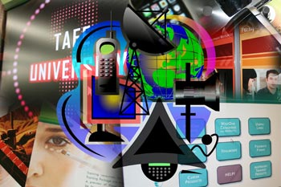

Comunicazione e media
Comunicazione e media is about the world of communications and media.
The main focus in this topic is to examine cultural identity and teenage body image as portrayed in the media and Italian cinema.
Modern technology will allow you to have l'Italia alla portata da mano and have immediate access to the heartbeat of Italian life.
You will engage with a variety of authentic and stimulating texts and attività which include pubblicità film, radio, forums and discussions. This exposure will extend your language skills and in particular increase your ability and confidence in understanding native Italian speakers. It will also develop your understanding of Italian cultural identity and lifestyle.
Suggested time for working through this topic is 14 hours.
